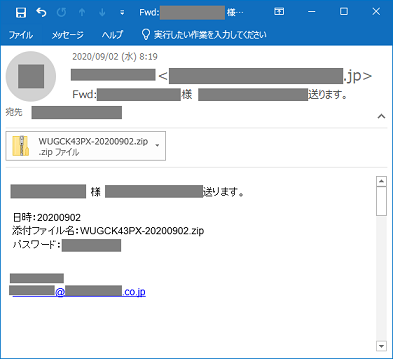

最近のセキュリティ・インシデント

（この記事は Facebook の TL に書き散らした内容からの再構成です）
言い訳すると，私はもう「エンジニア」でも「管理者」でもないので，自身に直接降りかかりそうなセキュリティ・インシデント以外は知らないふりをすることにしている（一応ブックマークは溜め込んでるけど）。 でも，まぁ，最近話題の以下の2つはブログ記事として記しておこうかな，と思ったので（笑）
帰ってきた Emotet
Emotet は主に電子メールで媒介される「トロイの木馬」に分類される malware で，単独での拡散機能はない。
日本では2019年末あたりから報告例が上がっていて，一時は沈静化していたが，2020年7月中旬から再活性化している。
Emotet の特徴は以下の通り。
Emotet は単体で感染することは少なく、認証情報を盗み出すトロイの木馬や身代金を要求するランサムウェアと一緒に感染することが多く、標的となるEメールや連絡先などの情報を盗み出し、これらの情報を利用して、実際に交わされたEメールの内容や連絡先を悪用し、偽装したEメールを配信することで新たな被害者を標的にします。受け取ったメッセージは正規のもののように見えてしまうため、ユーザーがこのフィッシングメールを判別することは極めて困難にです。Emotetは定期的にアップデートや改変が繰り返されており、Emotet自体とコマンド＆コントロールチャネルが更新できるため、従来のアンチウイルスのシグネチャやネットワークレベルでの検知は困難です
つまり Emotet 侵入は「第一段階」に過ぎず，次段階の内部情報の窃盗や ransomware を使った脅迫行為に向けた情報収集に使われているようだ。
なので Emotet を検出しても，それを「除去して終わり」とはならず，内部システムの徹底的な洗い出しや情報漏洩の可能性の検討等の面倒くさい作業が待っているわけだ。
Emotet 特効の防御策はないが，電子メールを媒介とすることから，通常の phishing 対策の徹底が重要となる。
- 身に覚えのないメールの添付ファイルは開かない。メール本文中のURLリンクはクリックしない。
- 自分が送信したメールへの返信に見えるメールであっても、不自然な点があれば添付ファイルは開かない。
- OSやアプリケーション、セキュリティソフトを常に最新の状態にする。
- 信頼できないメールに添付されたWord文書やExcelファイルを開いた時に、マクロやセキュリティに関する警告が表示された場合、「マクロを有効にする」「コンテンツの有効化」というボタンはクリックしない。
- メールや文書ファイルの閲覧中、身に覚えのない警告ウインドウが表示された際、その警告の意味が分からない場合は、操作を中断する。
- 身に覚えのないメールや添付ファイルを開いてしまった場合は、すぐにシステム管理部門等へ連絡する。
最近の事例として面白いのは「パスワード付き zip ファイル」をパスワードと共に添付して送るタイプである。

通常の添付ファイルは（企業・組織によっては）メールサーバ到達時点で拒否されることがあるため「パスワード付き zip ファイル」が使われるのだろうが，これが見事に日本の特殊商慣行というか奇習にマッチしているようで，9月に入ってから Emotet の侵入報告が激増しているらしい（笑）
個人的には（少なくともビジネス・シーンでは）メールにファイルを添付して送るのは今や「悪習」だと思う。 ファイルの共有を行いたいのであれば Google drive や Box, Dropbox などのストレージ・サービスを活用すべきだろう。 かといって Firefox Send のような認証を omit した仕組みでは却ってリスクが増すけれど。
キャッシュレス決済の脆弱性
私もどうしても「どこもろざ」と読んでしまう。 そもそも「銀行口座」を連想させるようなネーミングからして失敗だよな（笑）
Twitter の TL を眺めるに，「docomo 利用者以外は関係ない」と思っている人が意外に多そうだ。 関係ないからね。 上のリンク先の記事に挙がっている銀行の口座を持っている人は，一度は残高履歴を確認することを強くお勧めする。
「ドコモ口座」は最近流行りの「キャッシュレス決済」サービスのひとつである。
いわゆる「キャッシュレス決済」の市場は既に飽和していて「パイの食い合い」状態になっている。 これに拍車をかけるのが政府主導の「マイナポイント」で，ぶっちゃけ非常にウザい。
キャリア系の決済サービスの強みは回線契約自体が利用者の「信用」を担保することだったと思うが，サービス対象者を不特定に拡大してしまったために「信用」の構造が変わってしまったのが今回のポイントのひとつだろう。
もうひとつはチャージに「Web 口振受付サービス」を使っていること。

これは結構ヤバい仕組みだ。
邪推だが「ドコモ口座」では「口座振替」が同一ユーザ内で完結するから問題ないと思ったのだろう。 しかし，実際には「ドコモ口座」ユーザが「誰か分からない」のだから，この前提は成り立たない。
まぁ「ドコモ口座」は 2020-09-10 までに全ての銀行口座登録・変更機能を停止したそうで，遅きに失したとはいえ，措置としては妥当だろう。
「ドコモ口座」では「本人確認」を強化すると言っているが「本人確認書類」の詐取はいくらでもあり得るのだから，オンラインでの（完全な）身元確認は無理と考えたほうがいい。 むしろ「オンラインでの身元確認は無理」という前提で，どのようにサービスを設計するかが重要だろう。
あと，いまどき SMS 認証はヤメロ！ やる気あんのか？
これ，今回はたまたま「ドコモ口座」だっただけで，似たようなことをやらかしてる「キャッシュレス決済」サービスは結構あるんじゃないの？ 今回のインシデントを通じてきちんとリスク・アセスメントを行い，必要なら法規制をかけないと。 野放図にやりたい放題やる季節は（7pay 崩壊とともに）終わってるのよ。
また，この手の犯罪は必ず模倣者が出る。 しばらくは残高履歴をこまめにチェックしたほうがいいだろう。
【2020-09-12 追記】 暗証番号を認証に使ってはいけない
Twitter で見かけたが某国営放送風テレビが「暗証番号を定期的に変える」とか馬鹿すぎることを言ってるらしい。 誰がそんな頭の悪いことを言い始めたのやら… sigh
言うまでもないことだと思っていたが改めて言わせてもらうと，暗証番号や PIN コードは認証（authentication）には使えない。 これらのコードは数字4桁から6桁で構成されている。 このサイズの数字列を総当り方式で解読しても，かかるコストは1円未満しかならない。
利用する文字種類数と内訳
パスワード長
種類数
数字
文字
シンボル
4文字
8文字
12文字
16文字
10種 0-9 なし なし 1円未満
（$2^{13.3}$）1円未満
（$2^{26.6}$）約35円
（$2^{39.9}$）約35万円
（$2^{53.2}$）36種 0-9 a-z なし 1円未満
（$2^{20.7}$）約100円
（$2^{41.4}$）約1.65億円
（$2^{62.0}$）約276兆円
（$2^{82.7}$）62種 0-9 a-z
A-Zなし 1円未満
（$2^{23.8}$）約7,500円
（$2^{47.6}$）約1,120億円
（$2^{71.5}$）約165京円
（$2^{95.3}$）94種 0-9 a-z
A-Z! " # $ %
& ' ( ) =
~ | - ^ `
¥ { @ [
+ * ] ; :
} < > ? _
, . /1円未満
（$2^{26.2}$）約21万円
（$2^{52.4}$）約16.5兆円
（$2^{78.7}$）約129,000京円
（$2^{104.9}$）情報漏えいを防ぐためのモバイルデバイス等設定マニュアル 解説編
2.4.2.2項より）
たとえば TOTP (Time-based One-time Password) 認証では6桁の数字列を使うが，生存期間は30秒程度で，つまりその程度の信頼性しかないのだ。
じゃあ，永続的な暗証番号や PIN コードが何に使われるのかというと，デバイスやアプリの「アンロック」に使われる。 この場合，暗証番号や PIN コードはユーザと（手元の）デバイスの間でのみ共有されていればいいので，（アカウントのロックアウトも組み合わせれば）セキュリティ要件はかなり緩くできる。
しかし，暗証番号を「Web 口振受付サービス」のようなリモートサービスの認証で使うとなると話は変わってくる。 そもそも銀行側が「キャッシュカードの暗証番号を保持ってる」こと自体が問題だと思うが…
そういえば，どっかの説教番組が「SIM の PIN コードは変更したほうが安全」とか馬鹿なことを言ったそうで，実際に試した人のトラブルが続出したらしい（笑） 暗証番号や PIN コードは頻繁に変更するように考えられてないし，もし「頻繁に変更」が必要だと言うのなら，そのサービスやシステムは完全に失敗作である。
あっ，でも，最近は警察や銀行関係者を装って，キャッシュカードや暗証番号を詐取する詐欺が流行ってるらしい。 詐欺に引っかからないのが一番だが，万一の事後処理として「暗証番号を変更する方法」は確認しておいたほうがいいだろう。
ブックマーク
参考図書

- セキュリティはなぜやぶられたのか
- ブルース・シュナイアー (著), 井口 耕二 (翻訳)
- 日経BP 2007-02-15
- 単行本
- 4822283100 (ASIN), 9784822283100 (EAN), 4822283100 (ISBN)
- 評価
原書のタイトルが “Beyond Fear: Thinking Sensibly About Security in an Uncertain World” なのに対して日本語タイトルがどうしようもなくヘボいが中身は名著。とりあえず読んどきなはれ。ゼロ年代当時 9.11 およびその後の米国のセキュリティ政策と深く関連している内容なので，そのへんを加味して読むとよい。